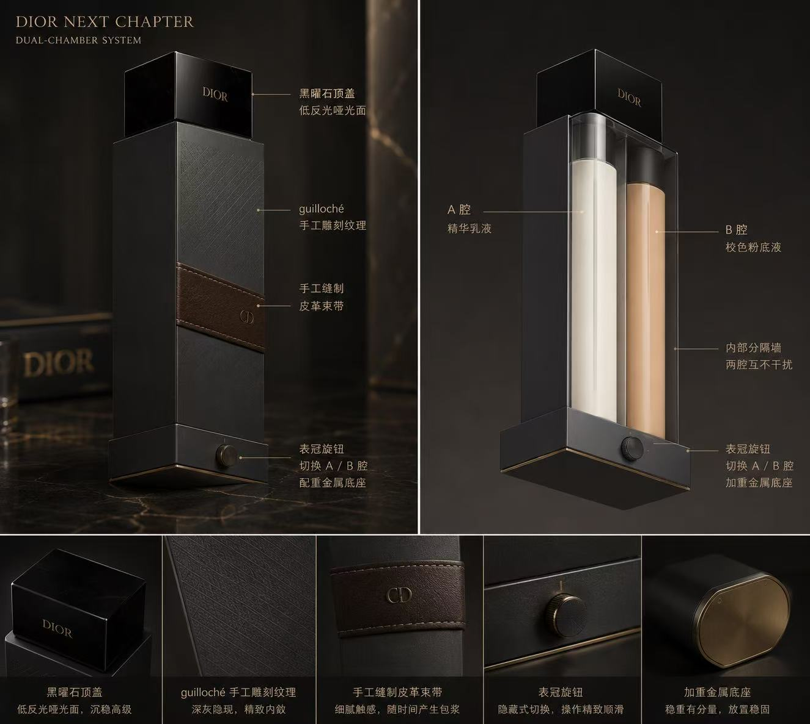

Dior 臻境仪 · Le Dispositif
日常有它稳定陪伴，重要时刻，它让你从容登场。
Dior 臻境仪（男士版）以双腔结构，将「日常持稳」与「即时焕新」收束于一支瓶身之内，
只需切换表冠旋钮，A 腔男士精华乳液给予肌肤持恒的照护，B 腔男士轻妆乳即刻点亮你的出场。
根据肤质与气候调配的精华乳液，日复一日，让肌肤保持稳定、通透、有秩序。
男士轻妆乳，多种自然色号与质感可替换，随时为晋升、仪式、远行等重要章节做好上场准备——别人看不出，但所有人都能感受到。
不同色号、不同配方、不同功效，伴随人生章节的变化，仅需更换芯体，即可续写同一段陪伴。
States of a Chapter
从日常持稳，到重要时刻的从容登场，再到人生转折时的平衡过渡——Dior 臻境仪是你每一页的注脚。
晨光、通勤、伏案、晚餐后的独处。
A 腔为你照料每一个平凡却珍贵的日子，让肌肤保持安稳，让心情免于琐碎纠结。
日常不是等待重要时刻的空白页，日常本身，就是一章持续书写的诗篇。
晋升报告、结婚典礼、重要发布会、首次以新身份与世界见面。
旋转表冠，B 腔男士轻妆乳登场——薄、贴、无负担，像你本身的好气色被轻轻擦亮了一层，
你依然是你，只是更笃定。
迁居海外、初为人父母、人生身份的重新书写。
A 腔换新配方，B 腔换新色号，连同你的档案一起更新。
AI 记录变化，真人顾问陪你一起适应：翻页之时，仍有熟悉的陪伴。
Life Chapters · 重要章节
每一次身份转换，都值得一次郑重的陪衬。我们把典型的人生节点提前准备好，只等你翻开属于自己的那一页。
新的抬头，需要更笃定的出场。顾问将为你调整 A 腔男士配方以适应更紧张的作息，并挑选与新身份相称的 B 腔男士质感。
从仪式前的肤质准备，到清晨剃须后的妆前打底、到最后一支香氛的落定。一套完整的男士上镜与续航方案，让你在所有的光线里，都像自己最得体的那一章。
气候、紫外线、水质与生活节奏的变化，都会被记录进档案。A 腔按新气候重新调配，让你迁居的翻页，少一段适应的颠簸。
睡眠、作息、激素，都会让肌肤换一本剧本。顾问重新为你设计"最省步骤"的章节，让你在忙碌里，仍保留一段属于自己的仪式。
Dual Companions · 双轨陪伴
我们不把服务做成冰冷的算法，也不把陪伴留在一次购物里。
AI 与真人顾问的双轨同行，让你的每一章，既有数据的细致，也有人的温度。
持续记录你的每一次状态变化——章节、气候、作息、反馈。在细碎的变化里，提前发现需要顾问介入的节点。
接受过 Dior 培训体系的资深顾问，现场测肤、聆听你的梦想，给出一本只属于你的方案书，并陪伴你写完整个章节。